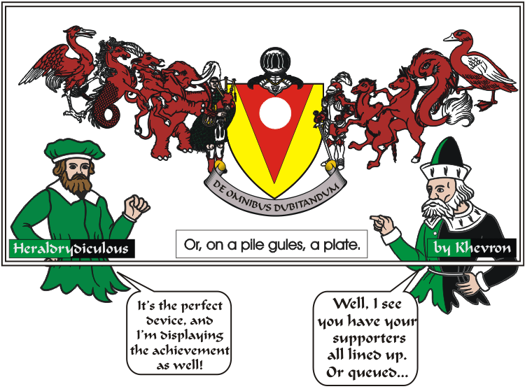

Supporters appear on the sides of arms, but only one per side. In most kingdoms, supporters and other add-ons are unregulated, and none are
registered with the College of Arms.
Left to right Supportered: Heron, Sea Horse, Ibex, Elephant and Highlander; Knight, Camel, Mule, Dolphin and Duck.
The Latin is "Doubt Everything".
(A pessimistic view - often attributed to Marx, but he probably got it from someone in period!)
e-mail: 
Back to Khevron's Heraldry Page